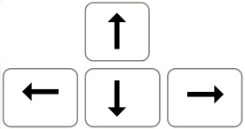

I: L'oreille
L’oreille d’une grande partie des mammifères est sensiblement la même. Elle se sépare en trois grandes parties.
La composition d'une oreille:
l'oreille externe qui est la partie visible de l’oreille, se constitue du
pavillon qui est une partie cartilagineuse recouverte de peau et d'un lobe qui lui n'est constitué que de peau.
Le pavillon a une forme de coquillage pour capter le plus de son possible et l'envoyer vers le conduit auditif qui est un petit tube de
2,5cm de long pour environ 0,5 cm de large.
C'est à l’intérieur de ce tube que se forme le cérumen plus communément appelé cire qui sert a piéger les corps étrangers comme la
poussière ou encore les bactéries.La barrière entre l'oreille externe et l'oreille moyenne est le
tympan.
L’oreille moyenne est la première partie qui est hors contact avec l’extérieur du corps.
Elle se compose de plusieurs cavités remplies d'air pressurisé.
Cette partie de l'oreille contient les 3 plus petits os du corps humain: le marteau, l'enclume et l'étrier.
Ces os, d'après des études, seraient à l'origine des os de la mâchoire ayant migré au cours de l'évolution vers leur place actuelle dans
l'oreille.
Elle se compose aussi des
trompes d'eustache qui relient l'oreille à la gorge.
Ce conduit permet notamment de maintenir la pression entre l'oreille externe et l'oreille moyenne.
L'oreille moyenne communique avec l'oreille interne par le biais de deux orifices: la fenêtre ronde et la fenêtre ovale.
L'oreille interne commence au niveau de l'étrier. C'est la partie la plus importante de l'oreille car elle possède le seul organe ayant la
capacité de traduire les ondes mécaniques provenant de l'oreille moyenne en impulsions électriques.
Cet organe est appellé la
cochlée. Elle est séparée en deux parties: le labyrinthe osseux et le labyrinthe membraneux (Ces parties sont nommées
ainsi en raison de leur complexité). Le labyrinthe osseux se compose de trois grandes parties: premièrement, le vestibule qui est la
partie centrale de la cochlée et agit comme une réserve d'
endolymphe. On remarque que celle-ci est anemée par l'aqueduc
qui contient le canal endolymphyque. Ensuite il y a le limaçon et enfin les canaux semi-circulaires qui sont responsables de l'équilibre.
Le labyrinthe membraneux quand à lui contient toutes les parties "molles" de l'oreille comme le nerf cochléaire qui est une partie du nerf auditif.
C'est au niveau de la cochlée que se situe l'organe de Cortis, c'est lui qui contient les
cellules cillées qui réagissent a des vibrations de l'endolymphe.
Modèle 3D de l'oreille
Un navigateur compatible WebGL est requis (Firefox est recommandé).
Le chargement peut prendre un peu de temps.
Contrôles:
 pour se déplacer.
Appuyez sur pour montrer et pour descendre
cliquez et maintenez pour pouvoir bouger la caméra.
La perception du son des oreilles au cerveau:
La perception du son se déroule en plusieurs étapes. D'abord le son est capté et amplifié par le pavillon grâce à sa forme pour aller dans le conduit auditif. Ensuite, l'onde sonore percute le tympan et est transformée en onde mécanique. Celle-ci est transmise aux osselets puis ira dans la fenêtre ovale de la cochlée. L'onde mécanique va alors devoir traverser l'endolymphe contenue dans les deux labyrinthes pour enfin arriver dans l'organe de Cortis. les cellules cillées vont alors convertir l'onde mécanique en signaux électriques qui vont jusqu'au cerveau à l'aide du nerf auditif. Une fois dans le cerveau, les signaux seront traités par le cortex auditif qui est situé dans le lobe occipital.
Les troubles de l'oreille:
Nous allons voir les troubles en deux cas: Les traumatismes acoustiques et les maladies.
Les pertes auditives peuvent être légères (de 20 à 40 dB), moyennes (40 à 70 dB), sévères (70 à 90 dB) et profondes (90 à 120 dB).
1er cas: Les traumatismes acoustiques.
Un traumatisme sonore est la plus part du temps du à une exposition prolongée à un son trop puissant (lien avec tolérance).
Cette exposition à ces différentes fréquences de sons cause des dégâts irréversibles sur l'oreille externe ou interne.
Par exemple l'un des symptômes les plus répandu est une saturation de la membrane qu'est le tympan ce qui entraîne alors une déchirure de
celui-ci.
Mais les traumatismes acoustiques peuvent également affecter la cochlée au niveau de l'organe de cortis qui est responsable de la
perception du son.
Cet organe est composé des cellules ciliées internes et externes qui baignent dans un liquide appelé l'endolymphe. ce sont des
mécanorécepteurs.
Une fréquence trop importante sur une durée prolongée peux faire gonfler puis exploser ces cellules.
Celle ci peut également endommager la
cellule de Deiters qui sert de soutien à toutes les autres cellules qui composent la cochlée, c'est
alors que la perte de l'audition s'effectue.
C'est a dire qu'il reçoivent un mouvement puis ils le transmettent au cerveau sous forme de message électrique, afin d'être interprétée
dans le lobe temporal 2.
L'aire auditive se trouve plus exactement a l'intérieur du cerveau sous le
sillon latéral (appelé sillon de Sylvius).
2e cas: les maladies.
L'oreille humaine peut être atteinte par plusieurs maladies mais celle la plus répandue est l'otite chronique moyenne.
Cette maladie se caractérise par deux grandes phases pendant la période d'incubation.
La première pahse dite d'activité: Elle est caractérisée par une forte infection de l'oreille moyenne ainsi qu'un écoulement de pus
provenant d'une perforation du tympan.
On remarque alors une faible diminution de l'audition.
La seconde phase est celle d'inactivité car il n'y a plus d'écoulement de pus.
L'otite est alors qualifiée de sèche car le tympan est toujours perforé.
Lors de sa cicatrisation, L'otite peut se transformer en tympanosclérose: cela s'apparente à un dépot de calcium et de phosphate soit aun
niveau du tympan, soit au niveau de l'oreille moyenne.
Dans le cas du tympan, il n'y a pas de complications sévères mais dans le cas de l'oreille moyenne, les problèmes auditifs vont être bien
plus importants car lorsque le tympan se perce des blocs de calcium et phosphate peuvent bloquer les osselets ce qui réduit leur mouvement
et donc l'audition.
On peut également observer une variant avec l'otite adhésive: le tympan se rétracte vers l'intérieur de l'oreille
Il y a aussi la cholestéatome: elle s'apparente à une poche de peau au niveau du tymapn. On la consdère comme une tumeur.
Le plus grand danger lié a cette maladie est le fait qu'elle à tendance à ronger tout ce qui se trouve autour d'elle, entre autre les
osselets.